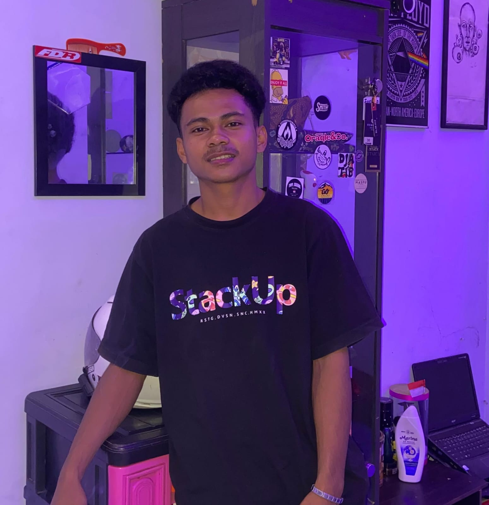

HELLO, I'M
Saya adalah mahasiswa Teknik Informatika yang memiliki ketertarikan dalam bidang Artificial Intelligence, Machine Learning, dan Web Development. Saya senang mempelajari teknologi baru dan mengembangkan solusi melalui pemrograman.

GET TO KNOW ME
Halo! Saya Wafiudin, mahasiswa Teknik Informatika yang memiliki ketertarikan besar terhadap perkembangan teknologi, khususnya Artificial Intelligence, Machine Learning, Data Science, dan Web Development.
Saya senang mempelajari hal-hal baru, mengeksplorasi teknologi, serta mengembangkan proyek yang dapat memberikan manfaat melalui pemrograman.
WHAT I LEARN
Beberapa bidang teknologi yang sedang saya pelajari dan kembangkan melalui perkuliahan maupun proyek pribadi.
Mempelajari kecerdasan buatan, algoritma machine learning, dan klasifikasi data.
Mempelajari pengolahan data, analisis data, visualisasi, dan data mining.
Mempelajari pembuatan website menggunakan HTML, CSS, JavaScript, dan teknologi web.
Mempelajari pengolahan citra, pengenalan objek, dan klasifikasi gambar.
MY RECENT WORK
Beberapa proyek yang pernah saya kerjakan dan kembangkan selama mempelajari teknologi.
Customer Churn Prediction
Proyek Data Mining untuk menganalisis dan memprediksi kemungkinan pelanggan berhenti menggunakan layanan.
Rice Leaf Disease Classification
Proyek klasifikasi penyakit daun tanaman padi menggunakan pendekatan Deep Learning dengan algoritma CNN.
Food Image Classification
Proyek pengenalan dan klasifikasi gambar bahan pangan menggunakan model Deep Learning.
Story Generation using T5
Proyek Natural Language Processing untuk menghasilkan cerita berdasarkan tema, tokoh, latar, dan alur.
GET IN TOUCH
Tertarik untuk berdiskusi, berkolaborasi, atau mengenal lebih jauh tentang proyek saya? Silakan hubungi saya melalui kontak berikut.